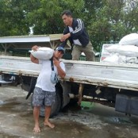
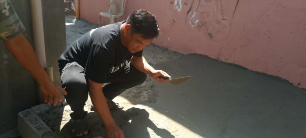

KAPITAN DENNIS
Una akong naglingkod sa barangay noong 2010. Una, pagdating ng 2018 at muli noong 2023, kinilala ako bilang kapitan ng Barangay Colgante. Tuwing may paparating na bagyo, organisado ang pagpasa ng datos sa bawat sangay ng mga Local Government Units (LGU). Ang National Disaster Risk Reduction and Management Council ang nagbababa ng direkta sa rehiyon. Pagdating sa rehiyon, ibababa ito sa antas panlalawigan na siya namang magbababa sa mga LGU o bayan. Pagkatapos, ang munisipyo ang magpapatawag ng pulong sa mga barangay. Saka ko iaaatas ang mga kilos na maaaring gawin ng bawat boluntaryo sa paghahanda, pagtugon, at pag-ahon mula sa pinsalang dulot ng baha at bagyo.
Sa dami ng oras na kinakain ng aking obligasyon na kaakibat ng pagsasagawa ng mga proyekto at papeles, hindi ko na pinipiling sumagot pa sa mga pasaring at komento ng ibang tao. Ginagamit ko na lamang ang bawat kritisismo upang mas palawakin ang aking pamamalakad sa direksyon na kinakailangan ng atensyon.

Sa kasalukuyan, bilang gabay sa aking sarili, mayroon akong checklist na sinusundan upang maantabayanan ko ang pag-usad ng bawat proyekto, tulad nitong isinasagawa namin ngayon na pagpapataas ng mga pathway sa eskinita, upang hindi na mahirapan ang mga naninirahan dito sa Sitio Centro Uno.

Sa aking sinumpaang tungkulin, nararapat lamang na naroroon ako kasama ng mga tanod upang mamanduhan ang mga operasyon. Kaya’t madalas na lumulusong ako sa baha, lalo na at maraming nangangailangan ng tulong sa paglikas mula sa kanilang bawat kinaroroonan. Sa kabila ng lahat ng aking tungkulin, ninanais ko na magkaroon ng oras sa aking pamilya. Kung kaya’t dinidisiplina ko ang aking sarili na limitahan ang mga diskusyon ukol sa barangay o komunidad sa harap ng hapag-kainan o tuwing nagkukuwento ang aking mag-ina. Bilang bahagi ng gobyerno ng Pilipinas na karaniwang binabatikos ng mga mamamayan sa social media, umaabot din sa punto na ang mga puna ay naididirekta sa mga tauhan sa barangay na siyang humaharap mismo sa mga tao.
“ Kaya’t nagpapasalamat din ako, dahil kung wala ang mga taong nambabatikos, hindi lalantad ang mga problema sa komunindad na maari maging problema ng lipunan. ”